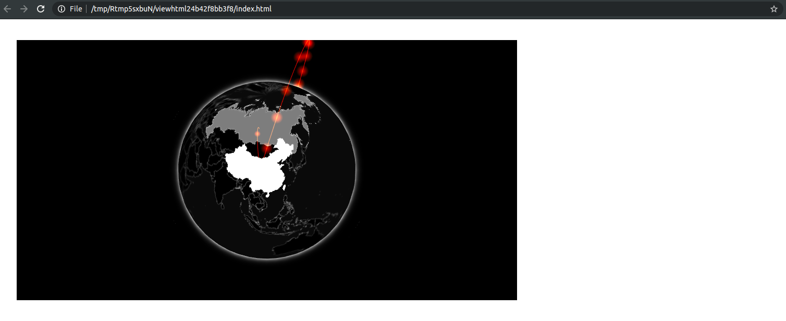
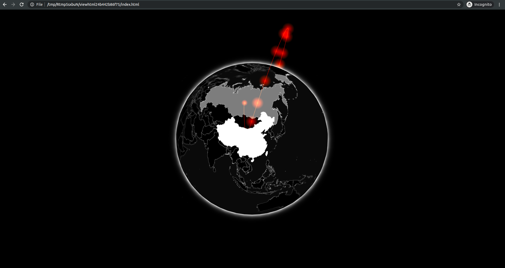
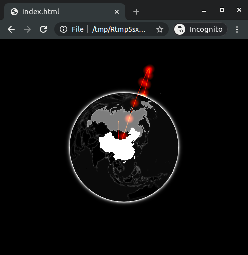
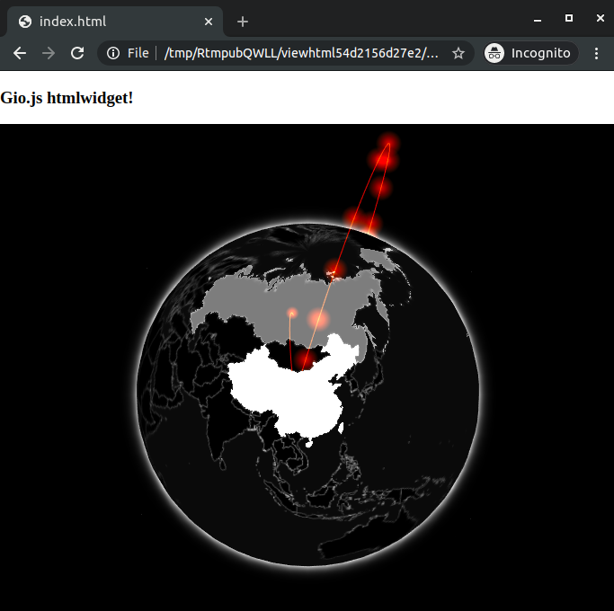

# serialised as string
jsonlite::toJSON("var x = 3;")
#> ["var x = 3;"]
htmlwidgets::JS("var x = 3;")
#> [1] "var x = 3;"
#> attr(,"class")
#> [1] "JS_EVAL"08 Advanced Topics
本章在gio包的基础上，主要讨论下面几点： - widget的大小调控 - 输入数据的格式控制 - 第二种JS库依赖配置方法 - 使用R传递JS代码 - 在widget前后插入其他内容
Sizing
widget的大小有两种调控方式：一种是绝对大小——px，另一种是相对（窗口）占比——x%，为了适配不同设备，通常宽度使用百分比设置，高度自适应。
gio包中的gio()函数有width和height参数，分别调控widget的宽度和高度，其中width参数默认为400px，高度自适应。
arcs <- jsonlite::fromJSON(
'[
{
"e": "CN",
"i": "US",
"v": 3300000
},
{
"e": "CN",
"i": "RU",
"v": 10000
}
]'
)
gio(arcs)
你可以试着改变宽度：
gio(arcs, width = 500) # 500 pixels wide
gio(arcs, width = "100%") # fits width这种调控方式适用于使用者，下面是针对开发者设置默认大小的方法。
Sizing Policy
在htmlwidgets::createWidget()函数中，添加sizingPolicy参数，设置widget的默认大小和填充；参数值由htmlwidgets::sizingPolicy()函数配置。不同的配置可以适配不同的使用环境，如：RStudio viewer，Web browser，R markdown等。
# create widget
htmlwidgets::createWidget(
name = 'gio',
x,
width = width,
height = height,
package = 'gio',
elementId = elementId,
sizingPolicy = htmlwidgets::sizingPolicy(
defaultWidth = "100%",
padding = 0,
browser.fill = TRUE
)
)
Resizing
前面我们讲过gio.js中的renderValue函数，当controller变量共享后，我们可以在resize函数中，对widget的大小进行重新渲染。gio.js由于底层自动调整widget大小，所以调整大小的函数resizeUpdate没有参数。
...
resize: function(width, height) {
controller.resizeUpdate();
}
...
此处控制widget大小的函数由JS库决定，例如gio.js库是resizeUpdate，plotly.js库是relayout，highcharts.js库是setSize，charts.js库是resize。
// plotly.js
Plotly.relayout('chartid', {width: width, height: height});
// highcharts.js
chart.setSize(width, height);
// charts.js
chart.resize();Pre Render Hooks and Security
htmlwidgets::createWidget()函数通过参数preRenderHook接受一个函数，用来在生成widget前执行预处理。该函数接受一个完整的widget对象，输出一个修改过后的widget对象。这种操作不是很常见，但有时十分有用。
例如，gio()函数的输入数据除了必要的e,v,i列外，如果存在其他列导致无法正确生成widget（实际无影响）时，我们需要确保输入数据的格式正确。
# add a variable that should not be shared
arcs$secret_id <- 1:2定义一个render_gio()函数，对输入数据进行格式控制。
# preRenderHook function
render_gio <- function(g){
# only keep relevant variables
g$x$data <- g$x$data[,c("e", "v", "i")]
return(g)
}
# create widget
htmlwidgets::createWidget(
name = 'gio',
x,
width = width,
height = height,
package = 'gio',
elementId = elementId,
sizingPolicy = htmlwidgets::sizingPolicy(
defaultWidth = "100%",
padding = 0,
browser.fill = TRUE
),
preRenderHook = render_gio # pass renderer
)JavaScript Code
JavaScript 代码无法通过JSON数据进行传递，需要特殊函数htmlwidgets::JS()进行转换。该函数为JavaScript代码字符串添加JS_EVAL属性，使其在被浏览器评估时可以被视作JavaScript代码。
Prepend and Append Content
使用htmlwidgets::prependContent()和htmlwidgets::appendContent()函数，可以在widget的前面或结尾添加额外的HTML内容（shiny，htmltools tags，a list of those）。注意：这两个函数在shiny中不起作用。
#' @export
gio_title <- function(g, title){
title <- htmltools::h3(title)
htmlwidgets::prependContent(g, title)
}gio(arcs) %>%
gio_title("Gio.js htmlwidget!")
Dependencies
前面讲到在inst/htmlwidgets/gio.yaml中添加JS库依赖，但这种方法适合添加通用型库，如果某些库仅是某些功能需要，则可以使用htmltools::htmlDependency()函数为widget对象单独添加依赖（dependencies）。如果全部使用第一种方法，会导致widget特别大，影响widget的加载速度，某些依赖库甚至可以只将某些使用的函数单独打包，减少加载时的大小。
下面我们使用JavaScript性能监控器stats.js库，为gio包添加展示诸如渲染帧率 (FPS) 或渲染可视化所需的毫秒数等信息。
dir.create("htmlwidgets/stats")
url <- paste0(
"https://raw.githubusercontent.com/mrdoob/",
"stats.js/master/build/stats.min.js"
)
download.file(url, destfile = "htmlwidgets/stats/stats.min.js")gio.js对stats.js的使用方法见这里。
// enable stats
controller.enableStats();参数dependencies由htmlwidgets::createWidget()生成，可以在函数内为widget添加该参数值，也可以直接在外部添加。
- 通过
system.file()获取stats.js的文件路径。 htmltools::htmlDependency()创建依赖项。- 将依赖项追加到widget对象的
dependencies参数中。 - 为x对象添加启动项。
- 返回widget对象。
#' @export
gio_stats <- function(g){
# create dependency
path <- system.file("htmlwidgets/stats", package = "gio")
dep <- htmltools::htmlDependency(
name = "stats",
version = "17",
src = c(file = path),
script = "stats.min.js"
)
# append dependency to gio.js
g$dependencies <- append(g$dependencies, list(dep))
# add stats variable
g$x$stats <- TRUE
return(g)
}同时修改inst/htmlwidgets/gio.js，将启动stat的代码添加到controller.init()之前。
// gio.js
if(x.stats)
controller.enableStats();
controller.init();允许下面代码，可以看到左上角的实时信息。
# create gio object
arcs %>%
gio() %>%
gio_stats()可以将上面两种方法类比于R包DESCRIPTION文件中的Imports和Suggests。
Compatibility
htmlwidgets::getDependency()函数可以提取widget R包中的依赖项，方便不同widget之间进行兼容，避免冲突。提取到的依赖项中第一个是htmlwidgets，最后一个是gio。
# get dependencies of the gio package
htmlwidgets::getDependency("gio")
#> [[1]]
#> List of 10
#> $ name : chr "htmlwidgets"
#> $ version : chr "1.6.4"
#> $ src :List of 1
#> ..$ file: chr "www"
#> $ meta : NULL
#> $ script : chr "htmlwidgets.js"
#> $ stylesheet: NULL
#> $ head : NULL
#> $ attachment: NULL
#> $ package : chr "htmlwidgets"
#> $ all_files : logi TRUE
#> - attr(*, "class")= chr "html_dependency"
#>
#> [[2]]
#> List of 10
#> $ name : chr "three"
#> $ version : chr "110"
#> $ src :List of 1
#> ..$ file: chr "htmlwidgets/three"
#> $ meta : NULL
#> $ script : chr "three.min.js"
#> $ stylesheet: NULL
#> $ head : NULL
#> $ attachment: NULL
#> $ package : chr "gio"
#> $ all_files : logi TRUE
#> - attr(*, "class")= chr "html_dependency"
#>
#> [[3]]
#> List of 10
#> $ name : chr "gio"
#> $ version : chr "2"
#> $ src :List of 1
#> ..$ file: chr "htmlwidgets/gio"
#> $ meta : NULL
#> $ script : chr "gio.min.js"
#> $ stylesheet: NULL
#> $ head : NULL
#> $ attachment: NULL
#> $ package : chr "gio"
#> $ all_files : logi TRUE
#> - attr(*, "class")= chr "html_dependency"
#>
#> [[4]]
#> List of 10
#> $ name : chr "gio-binding"
#> $ version : chr "0.1.0"
#> $ src :List of 1
#> ..$ file: chr "htmlwidgets"
#> $ meta : NULL
#> $ script : chr "gio.js"
#> $ stylesheet: NULL
#> $ head : NULL
#> $ attachment: NULL
#> $ package : chr "gio"
#> $ all_files : logi FALSE
#> - attr(*, "class")= chr "html_dependency"Unit Tests
使用devtools::install()安装好gio包后，可以使用testthat包进行单元测试。
library(gio)
library(testthat)
test_that("gio has correct data", {
g <- gio(arcs)
# internally stored as data.frame
expect_is(g$x$data, "data.frame")
# gio does not work without data
expect_error(gio())
})Performances
使用widget R包时，数据的传输过程为：
- 加载到R中
- R将数据转换为JOSN格式
- JSON数据嵌入到HTML中
- JS解析JSON数据
当数据较小时，不会影响浏览器的响应速度，但是当数据较大时，会拖慢浏览器的响应速度。可以使用额外的技术加快数据加载过程。例如下面的AJAX技术。
# this would placed in the shiny UI
load_json_from_ui <- function(path_to_json){
script <- paste0("
$.ajax({
url: '", path_to_json, "',
dataType: 'json',
async: true,
success: function(data){
console.log(data);
window.globalData = data;
}
});"
)
shiny::tags$script(
script
)
}